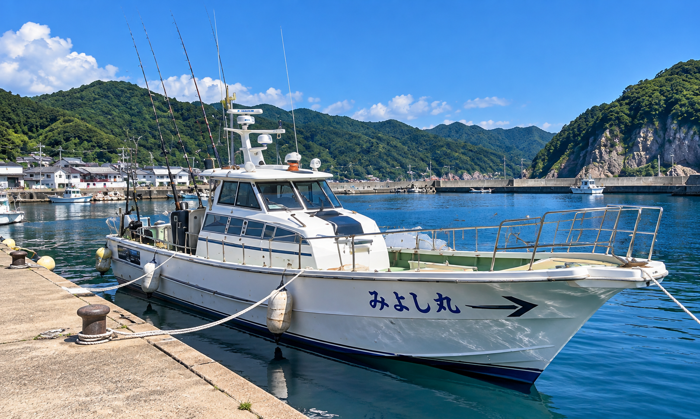
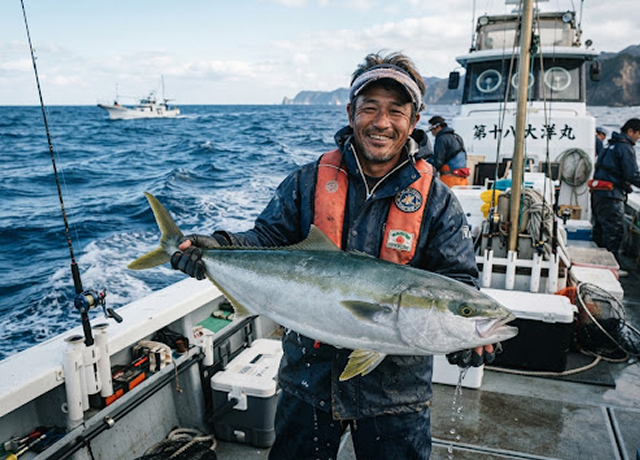
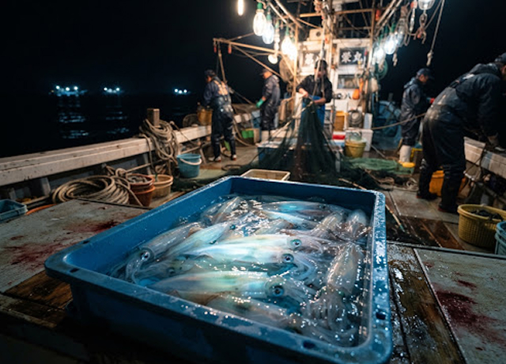
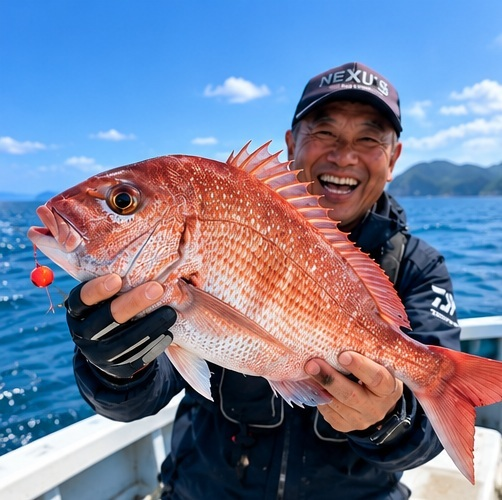
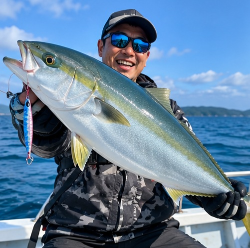
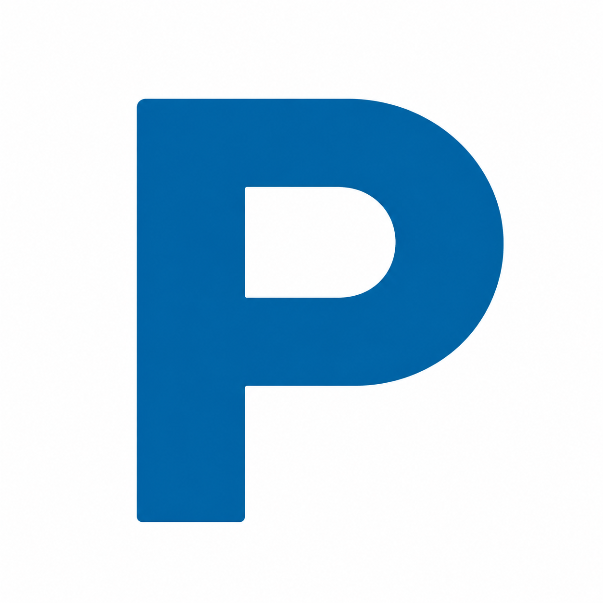
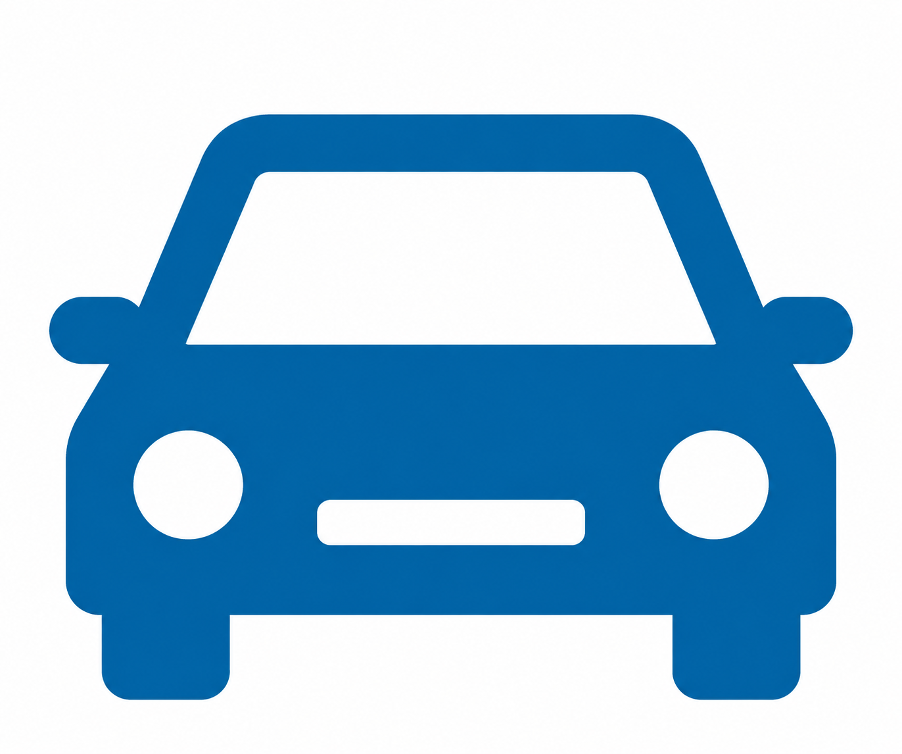
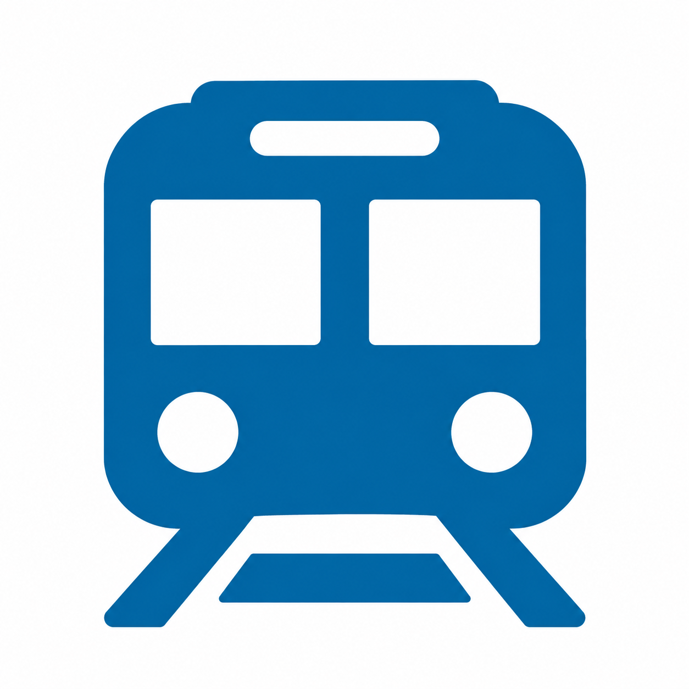

明日の海は良さそうです。秋の青物気配！
竹野の海で、最高の一日を。
ABOUT
船について
初心者の方からベテランの方まで、
竹野の海で最高の一日を楽しんでいただける遊漁船を目指しています。

兵庫県豊岡市竹野港発
日本海の豊かな海で、
日本海の豊かな海で、
心躍る釣り体験を。
みよし丸は兵庫県豊岡市・竹野港から出船する遊漁船です。山陰ジオ パークの絶景を望むポイントへご案内し、初心者の方からベテランの 方まで、日本海の釣りを気軽に楽しんでいただけます。
マダイ、ブリ・ヒラマサなどの青物ジギング、夏の風物詩である夜焚き白イカ（イカメタル）、イサギなど、四季折々のベストなターゲットをキャプテンが確かな操舵と魚探技術で丁寧にサポートします。
PRICE
料金・プラン
「船釣りが初めて」というお客様でも
快適に日本海の海釣りをお楽しみいただける充実の設備と体制を整えています。
-
乗合
（1名様）基本料金
12,000 円 ～
ターゲット魚種（タイラバ・青物ジギング・イカメタル）や 出船時間により変動します。
-
チャーター
仕立て基本料金
60,000 円 ～
気の合う仲間やグループで貸切。 出船時間や狙うターゲットも柔軟にご相談可能です。
-
子ども
（小学生以下）基本料金
8,000 円 ～
小学生以下のお子様料金。 お子様用の小型救命胴衣をご用意しています。
手ぶらでもOK！
充実のレンタルタックル！
初心者の方大歓迎！
（仕掛け・ルアーの販売もあります。）
REPORT
最新の釣果
竹野沖での最新の釣果をお届けします。
季節ごとの魚や海の様子をぜひご覧ください。
-

ジギング便で大型青物ヒット！
絶好な引きを耐え抜き見事キャッチされた見事な青物！ ベイトの反応も良好で力強いファイトを存分に堪能。
詳細 -

イカメタル便、トップ40杯超え
集魚灯点灯後、中層付近でアタリが頻発。 活性も高く良型ケンサキイカが次々と上がり、大漁満足。
詳細 -

ブリ・マダイ好調！良型連発
潮の動き始めとともにマダイのアタリが連発。 70cm級の美しい魚体をはじめ、船中全員安打で活況な一日。
詳細 -

鯛ラバ便、良型マダイ連発！
朝から潮の流れも良く、マダイのアタリが続出。 60cm級の良型も次々と上がり、船中全員安打で大満足の釣果となりました。
詳細 -

ジギング便、青物絶好調！
朝から青物の反応が良く、ブリやメジロが連発。 強烈な引きに船上も大盛り上がり！良型も多数上がり、充実した釣行となりました。
詳細
ACCESS
竹野港へのアクセス
兵庫県豊岡市・竹野港から出船します。
お車・電車でのアクセスはこちらからご確認ください。
MEETING PLACE
集合場所
兵庫県豊岡市竹野町竹野 竹野港船着場

PARKING
駐車場について
港内に無料駐車スペースあり。
船のすぐ近くに駐車可能ですので
タックル等の積み下ろしもスムーズ！！

BY CAR
お車でお越しの方
北近畿豊岡道「日高神鍋高原IC」
または「豊岡出石IC」より約35分。
国道178号線経由。

BY TRAIN
電車でお越しの方
JR山陰本線「竹野駅」よりタクシーで約5分。
竹野浜海岸沿い。
BOOK YOUR FISHING
竹野で、特別な一日を。
ご予約・空き状況のお問い合わせは
電話または公式LINEからお気軽にどうぞ。
四季折々の豊かな日本海の釣りを
ご用意してお待ちしております。